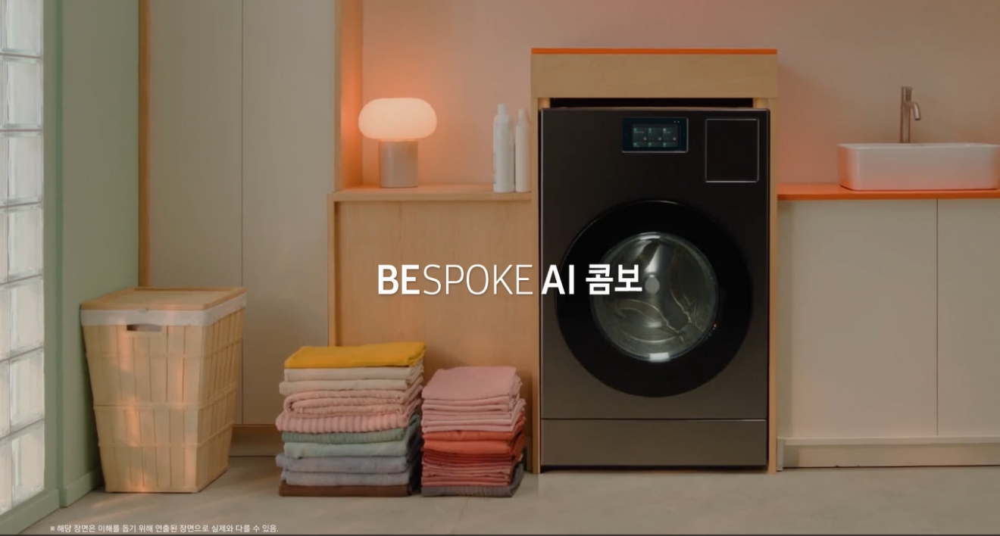
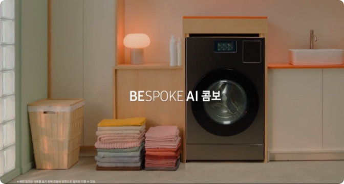

<section class="sec_video" id="sec_video" data-page-content="combo">
    <div class="inner_1440">
        <div class="pt_title__box">
            <h3 class="pt_title"><em class="en">BESPOKE AI</em> 콤보 <em class="en">TVC</em> 영상 보기</h3>
        </div>
        <div class="pt_video_wrap">
            <div class="pt_video_box">
                <a href="#" class="btn_play" data-role-video="tvc_video"></a>
                <div class="img_box">
                    
                    
                </div>
                <video id="tvc_video" autoplay muted controls playsinline>
                    <source src="" type="video/mp4">
                </video>
            </div>
            <div class="vid_script_wrap">
                <div class="vid_script">
                    한 번에 완성하는 세탁 건조<br />
                    ※ 해당 장면은 이해를 돕기 위해 연출된 장면으로 실제와 다를 수 있음.<br />
                    <br />
                    99분만에 세탁부터 건조까지 한 번에<br />
                    ONE 솔루션 세탁 건조 * 쾌속 코스 기준<br />
                    ※ 99분 시험 조건: DOE 시험포(면/폴리에스테르 혼방) 3KG, 쾌속코스, 세탁온도 냉수, 헹굼횟수 1회, 탈수 세기 최강, 건조 정도 보송하게 설정 기준.<br />
                    ※ 자사 시험 결과로 실사용 환경에 따라 다를 수 있음.<br />
                    ※ 해당 장면은 이해를 돕기 위해 연출된 장면으로 실제와 다를 수 있음.<br />
                    <br />
                    AI로 전기 요금 걱정 없이<br />
                    AI 절약 모드<br />
                    ※ AI 절약 모드로 누진 단계에 따른 에너지 관리를 하기 위해서는 사용 환경에 따라 스마트 미터기 별도 구매가 필요.<br />
                    ※ AI 절약 모드는 SmartThings에서만 지원하며, SmartThings는 지원 환경 및 사용 방법에 일부 제한이 있으며, 자세한 내용은 삼성닷컴 참조.<br />
                    ※ AI 절약 모드 사용시 세탁 및 건조시간이 늘어날 수 있음.<br />
                    ※ 해당 장면은 이해를 돕기 위해 연출된 장면으로 실제와 다를 수 있음.<br />
                    <br />
                    AI로 세탁물에 딱 맞게 알아서<br />
                    AI 맞춤 세탁 건조<br />
                    ※ AI 맞춤 코스 사용 시, 세탁물 종류 분석은 세탁량 3kg 이하, 오염도 감지는 세탁량 9kg 이하에서 동작하며, 실사용 환경 및 세탁물 종류에 따라 다를 수 있음.<br />
                    <br />
                    국내 최대 용량으로 한 번에 더 많이<br />
                    세탁 25kg 건조 15kg<br />
                    ※ 국내 최대 용량 : 세탁 용량 25kg+건조 용량 15kg, 한국에너지공단에 신고된 가정용 전기 세탁기(드럼) 기준 / 2024년 2월 16일 기준.<br />
                    <br />
                    큰 화면에서 상태 확인도 손쉽게<br />
                    빅 스크린<br />
                    ※ 해당 장면은 이해를 돕기 위해 연출된 장면으로 실제와 다를 수 있음.<br />
                    <br />
                    남은 습기까지 걱정 없이<br />
                    오토 오픈 도어<br />
                    ※ 해당 장면은 이해를 돕기 위해 연출된 장면으로 실제와 다를 수 있음.<br />
                    <br />
                    AI로 세탁부터 건조까지 한 번에, 빠르게<br />
                    ※ 해당 장면은 이해를 돕기 위해 연출된 장면으로 실제와 다를 수 있음.<br />
                    <br />
                    세상에 없던 AI Life<br />
                    ※ 해당 장면은 이해를 돕기 위해 연출된 장면으로 실제와 다를 수 있음.<br />
                    <br />
                    BESPOKE AI 콤보<br />
                    ※ 해당 장면은 이해를 돕기 위해 연출된 장면으로 실제와 다를 수 있음.<br />
                </div>
            </div>
        </div>
    </div>

</section>
<!--// sec_video -->

